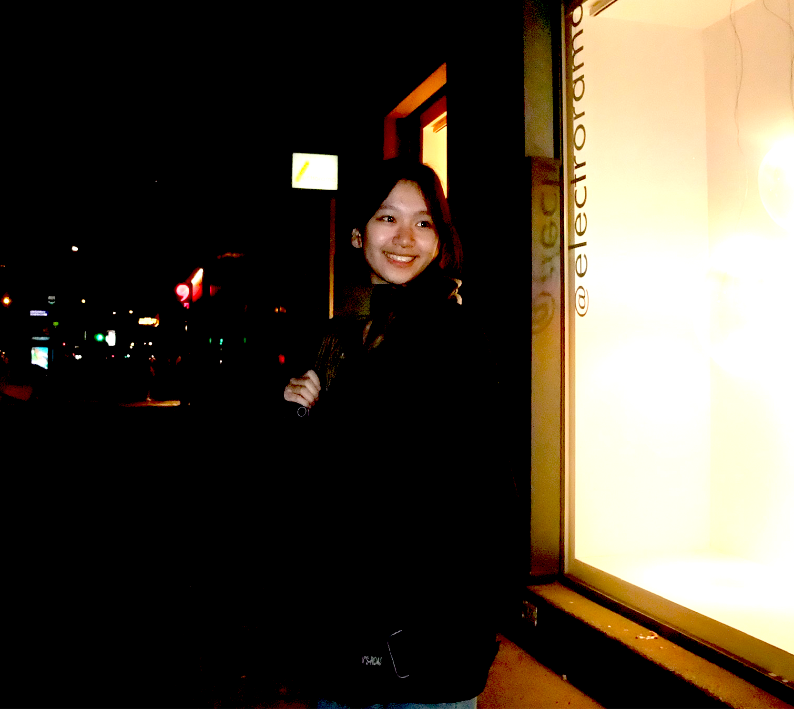

Hello, 你好, bonjour! My name is
Rachel Jing.
scroll down to learn more ⬇
About me

Extra Learning
Learning HTML and CSS to create my portfolio was an invaluable experience for me this semester, as it was a chance to challenge myself and create something from scratch with no prior knowledge. Despite only having dabbled in HTML in sixth grade and having some experience in digital design, I dove in headfirst and taught myself the ropes. It was a fun, yet difficult journey, but with the help of online tutorials and YouTube videos, I was able to create a portfolio that I'm proud of, all within a limited timeframe. As the website grew more complex, I found myself getting lost in my own code, struggling to keep track of where certain elements were located. However, despite these challenges, I enjoyed the process of designing a website, even though it was more tedious compared to using pre-made templates or website builders. Overall, I believe this experience gave me a great hard skill that I can use when applying for future jobs, something I plan to do this upcoming summer, and also allowed me to discover something new that I enjoy doing.
Contact Me
my school email: rachel.jing2@student.tdsb.on.ca
my personal email: rachelyjing@gmail.com